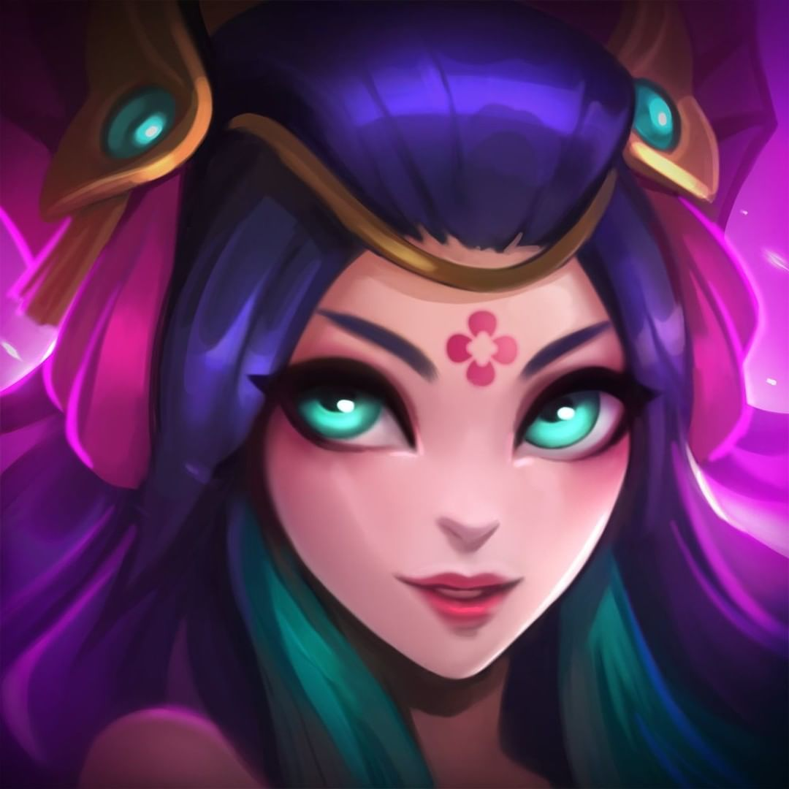

Aguás de Sentina
Lore
Reworks
Fan Mades
A Conjuradora das Marés
Nami, uma jovem e obstinada vastaya dos mares, usa seu cajado místico de Conjuradora das Marés para reordenar as marés e defender os Marai de todos os perigos.
Saiba Mais!